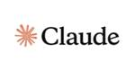
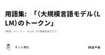

#LLMタグ
https://note.com/hashtag/LLM
「#LLM」の人気タグ記事一覧です
フィード
5W1HとLLMが解き放つ、高品質コンテンツ生成
#LLMタグ
ウェブコンテンツの需要が高まる昨今、ライターは質の高い記事を効率的に生み出すことが求められています。しかし、魅力的なテーマ設定、読者の心を掴む構成、正確な情報収集、そして洗練された文章表現と、クリアすべきハードルは少なくありません。 そこで、ライターの強力な武器として注目されているのが「5W1H」と「LLM（Large Language Model）」です。本文では、これらのツールを駆使し、専門性を備えた高品質なコンテンツを生み出す手法を探求していきます。 続きをみる
1時間前
【論文瞬読】OpenAIのo1モデルの推論パターンを徹底解剖!最新の研究からわかったこと
#LLMタグ
こんにちは！株式会社AI Nestです。今回は、OpenAIのo1モデルの推論パターンに関する最新の研究論文を詳しく解説していきたいと思います。AIの進化が日々話題となる中、「なぜo1は優れているのか」という本質的な疑問に切り込んだ興味深い研究なので、じっくりと見ていきましょう。 タイトル：A Comparative Study on Reasoning Patterns of OpenAI's o1 Model URL：https://arxiv.org/abs/2410.13639 所属：M-A-P、University of Manchester、OpenO1 Team、2077AI、Abaka AI、Zhejiang University、University of Chinese Academy of Sciences 著者：Siwei Wu, Zhongyuan Peng, Xinrun Du, Tuney Zheng, Minghao Liu, Jialong Wu, Jiachen Ma, Yizhi Li, Jian Yang, Wangchunshu Zhou, Qunshu Lin, Junbo Zhao, Zhaoxiang Zhang, Wenhao Huang, Ge Zhang, Chenghua Lin, J.H. Liu 続きをみる
10時間前
データ合成で突破するAIの限界：LLMの新たな可能性を探る
#LLMタグ
AI技術は今、次の大きな飛躍に向けて動き出しています。大規模言語モデル（LLM）のパフォーマンスを支える鍵として「合成データ」が注目され、特に最近の研究では、その可能性と課題が詳細に分析されています。中国の北京航空航天大学（Beihang University）の研究チームが発表したA Survey on Data Synthesis and Augmentation for Large Language Models（Ke Wang、Jiahui Zhu、Minjie Renほか）という画期的な論文では、LLMのライフサイクル全体を通じて合成データがどのように活用され、AIの限界を突破する可能性があるかを徹底的に探っています。本記事では、この最先端の研究を紹介し、データ合成がいかにしてAIの未来を加速させるのか、その全貌を明らかにします。 論文： 続きをみる
11時間前
AI実践企業事例①-大手企業の成功事例に見る実践のヒント
#LLMタグ
こんにちは、フューチャーゲートAI事業準備室です。 ※株式会社フューチャーゲート内にあるAI事業準備室（https://futuregate.jp） 本記事では、ベネッセやセブン＆アイなど、実際に生成AIを導入し成果を上げている企業の事例を紹介します。 続きをみる
11時間前
AIニュース:Twitter RunwayがAct-One、Investment CrewAIがサードパーティのモデルを使用してビジネスタスクなどを自動化
#LLMタグ
OpenAIが初のチーフエコノミストを採用 OpenAIは、初のチーフエコノミストとしてアーロン・チャタジー氏を任命した。チャタジー氏は以前、バイデン大統領の下で米国商務省のチーフエコノミストを務め、オバマ大統領の経済諮問委員会の上級エコノミストでもあった。また、デューク大学でビジネスと公共政策を教えている。OpenAIでは、経済成長や雇用機会などのトピックに焦点を当て、人工知能（ AI）が経済にどのような影響を与えるかを研究する。 続きをみる
13時間前
AIニュース：TransluceAI非営利研究所が設立、Google DeepMindがSynthID透かしツールをリリースなど
#LLMタグ
TransluceAIが非営利研究ラボを開設 TransluceAI は、 AI をガイドし理解するためのオープンソースツールを作成する非営利ラボを立ち上げました。目標は一般の人々を支援することです。共同設立者の Jacob Steinhardt 氏と Sarah Schwettmann 氏が発表の中でこのニュースを共有しました。 続きをみる
14時間前
マルチエージェントLLMフレームワークのAutoGenを試す
#LLMタグ
マルチエージェントでLLMを用いたフレームワークの「AutoGen」を試したことについて書きます。 AutoGenはMicrosoftがオープンソースで開発を行っています。 続きをみる
17時間前

LLMニュースまとめ[2024年9月30日~10月5日]
#LLMタグ
2024年9月30日~10月5日のLLM関連のニュースとして有名なもの、個人的に刺さったもの9点を以下にまとめる。 続きをみる
19時間前
【生成AI x RPA!】Computer useを試した。未来は感じた。
#LLMタグ
こんにちは、スクーティーという会社の代表のかけやと申します。 弊社は生成AIを強みとするベトナムオフショア開発・ラボ型開発や、生成AIコンサルティングなどのサービスを提供しており、最近はありがたいことに生成AIと連携したシステム開発のご依頼を数多く頂いています。 米国時間2024年10月22日、Anthropic社は新たな言語モデルClaude 3.5 Sonnet、Claude 3.5 Haiku、そしてAIによるコンピューター操作を可能にする革新的な機能"Computer Use"を発表しました。 衝撃を受けたのはComputer Useで、Claudeの言語モデルを介して、自然言語で指示する形でPCの操作を行うというものです。つまり、生成AI x RPA のようなイメージですが、Computer useによってPC上で行う繰り返し作業を自動化できる幅がかなり広がりそうだと感じました。 この記事では、今回発表されたClaude 3.5 Sonnet、Claude 3.5 HaikuとComputer useの概要と、Computer use使用方法、そしてComputer useを使用した所感をお届けしたいと思います。 続きをみる
1日前
2024年 生成LLM ランキング7
#LLMタグ
大規模言語モデル（LLM）のベンチマーク方法は、モデルの性能を多角的に評価するため、さまざまなテストやタスクを使用して行われます。複合的な評価で2024年10月時点における各LLMの性能測定結果ランキングは以下のようになります。 続きをみる
1日前

【2024/10】Anthropicリリースまとめ〜Claude新モデル・画面操作「Computer Use」〜
#LLMタグ
10月22日に発表されたAnthropicのアップデート内容をまとめてみました！ 今回のリリースでは、 続きをみる
1日前
【生成AIニュース】『Stable Diffusion 3.5』『Mann-E Flux』『Claude 3.5』『Mochi 1』『Act-One』他
#LLMタグ
まいどです。 本日の生成AIニュース。 続きをみる
2日前
「Reflection 70B 最終報告 — 振り返りと総括」
#LLMタグ
この note は Matt Shumer さんの以下のツイを日本語に訳して 「いったい何が起こったのか？」を調査したものです https://t.co/XZIjbIVfps — Matt Shumer (@mattshumer_) October 15, 2024 続きをみる
2日前
読書ノート：ことばの意味を計算するしくみ （著：谷中 瞳）、その2：3章 形式統語論の考え方(後半)
#LLMタグ
はじめに 計算機言語学と自然言語学との橋渡しをすると謳う、気鋭の計算機を活用した言語学者である谷中先生の新刊。大規模言語モデルと伴走しながら、読んでいくシリーズである。「Ⅱ計算機言語学からみたことばの意味を計算するしくみ」からスタートする。 続きをみる
2日前
大規模言語モデルと地図作成ツールを統合し、自律的にマップを生成・編集する「MapGPT」フレームワークの提案
#LLMタグ
メタデータ タイトル: MapGPT: an autonomous framework for mapping by integrating large language model and cartographic tools 著者: Yifan Zhang, Zhengting He, Jingxuan Li, Jianfeng Lin, Qingfeng Guan, Wenhao Yu 出版年: 2024年10月3日 雑誌: Cartography and Geographic Information Science DOI: 10.1080/15230406.2024.2404868 ハッシュタグ: #Cartography #GeoAI #LLM #Mapping #AutoGPT ひとことでいうと: 大規模言語モデルと地図作成ツールを統合し、自律的にマップを生成・編集する「MapGPT」フレームワークの提案 続きをみる
2日前
AiNews: LangChainAI が新世代の AI アプリケーションを開発、Transformers.js v3 が WebGPU サポート付きでリリース」など
#LLMタグ
Anthropicは開発者とユーザー向けにいくつかのクールなアップデートを開始しました。 36 では、より優れたサポートを提供する Claude 3.5 Sonnet と Claude 3.5 Haiku が導入されました。Claude は、画面を見て、マウスを動かし、ボタンをクリックし、人間のように入力できる本物のアシスタントです。これにより、視覚的な支援が必要なタスクの自動化が容易になり、日常的なニーズに対応する仮想アシスタントとして機能します。 続きをみる
2日前
文系開発日記 : ClaudeのComputer Useを動かす
#LLMタグ
参考記事：Npakaさん本当に早く、おこがましいですが、すごく綺麗にまとまってて、おすすめです この記事は日記なので紆余曲折も入れてあり、単純明快な正確性を求められるのでしたら、他の記事を見られた方がいいと思います^_^ (有料部は投げ銭です) 続きをみる
2日前
Transformers.js v3 の概要 2
2
#LLMタグ
以下の記事が面白かったので、簡単にまとめました。 ・Transformers.js v3: WebGPU Support, New Models & Tasks, and More… 続きをみる
2日前

用語集: 「（大規模言語モデル（LLM）のトークン」
#LLMタグ
今回は「大規模言語モデル（LLM）の）トークン」について見ていきましょう。 「（大規模言語モデル（LLM）のトークン」： 大規模言語モデル（LLM）が文章を理解したり、生成したりする際に、文章を細かく分割した単位のことをトークンと呼びます。 続きをみる
2日前